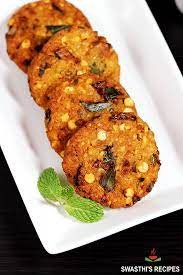

Masala Vadai

Description
Masala Vada is a popular snack made by frying coarsely ground chana dal along with spices, chilli, onions and coriander leaves. Masala Vada is relished with chutney and a perfect accompaniment for tea & coffee.
Ingredients
- Dal
- Onion
- coriander leaves
- Red Chillies
- Garlic
- Ginger and Fennel Seeds
- Oil
Procedural steps
- Take chana dal in a bowl.
- Wash and soak channa dal for 2 to 3 hrs. Keep covered and set aside.Then drain the water completely and keep aside
- To a mixer jar add ginger, garlic red chillies and fennel seeds.
- Grind together the ingredients to a coarse paste like shown below.
- Then add half of channa dal.
- Grind to a coarse mixture make sure it should be thick, do not add water.Few dal as whole here and there should be there which gives crisp texture.
- Then transfer the mixture to a bowl. Grind the rest of chana dal to a coarse mixture.
- Mix this well first.Then add onion,coriander leaves,salt and hing.
- Take a small portion shape them as a ball.
- Slightly flatten it between your palms.
- Deep fry them till golden brown, turning over both sides.
- Drain it and crispy vadai is ready to serve.
back to recipes